Minha Biblioteca
no seu curso
Como verificar a integração, disponibilizar o catálogo e adicionar conteúdos específicos diretamente nas seções da sua disciplina.
1. Adicionar a Minha Biblioteca ao curso
Siga o fluxo comum e escolha como disponibilizar o acervo
Independente do tipo de acesso que deseja configurar, o início do processo é sempre o mesmo:
Ative o modo de edição da disciplina
No canto superior direito do curso, clique em "Ativar edição" (ou no botão de lápis/engrenagem). A interface muda e exibe opções de edição em cada seção.
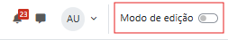
Escolha a seção e clique em "+"
Navegue até a seção onde o item da MB deve aparecer. Clique no botão "+" (ou "Adicionar uma atividade ou recurso") que aparece no rodapé da seção.
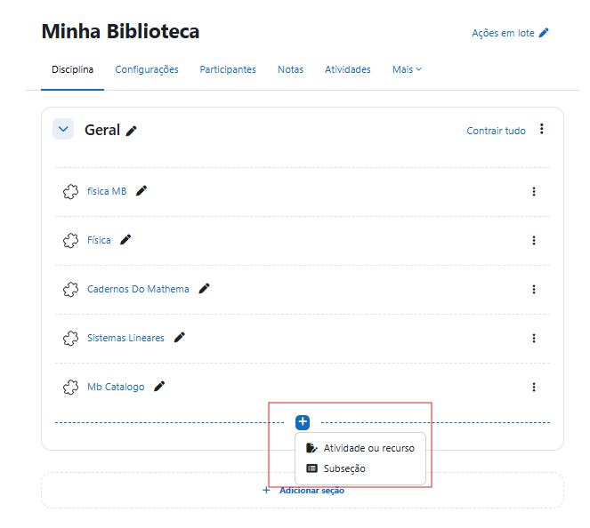
Localize e selecione a Minha Biblioteca
Na lista de atividades e recursos, encontre o item "Minha Biblioteca" (o nome exato é definido pelo administrador ao instalar o LTI). Clique nele para selecioná-lo.
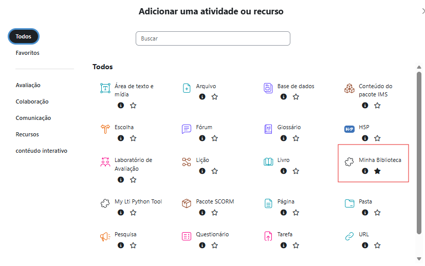
Clique em "Adicionar"
Com a Minha Biblioteca selecionada, clique em "Adicionar". A página de configuração da atividade abrirá.
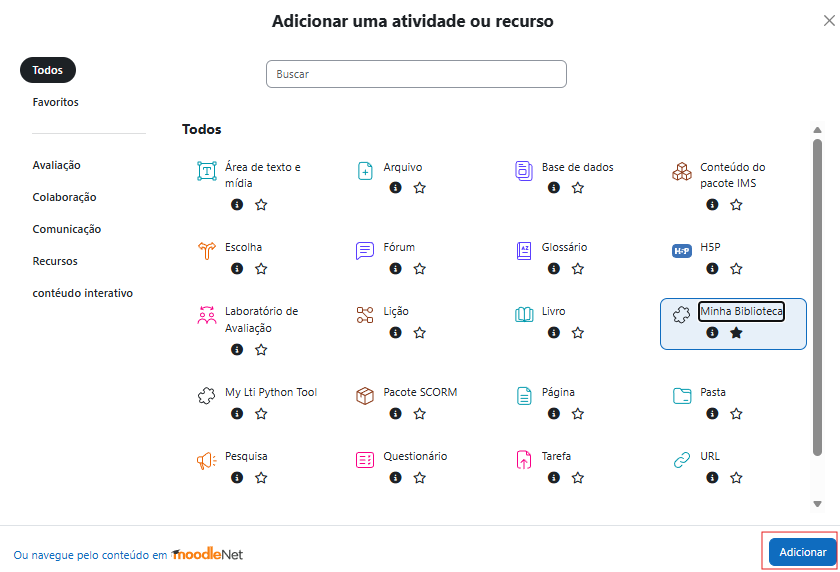
Acesso ao catálogo
O aluno clica e acessa a home da Minha Biblioteca — busca livre em todo o acervo contratado. Basta dar nome ao item e salvar.
Conteúdo específico (Deep Link)
Você seleciona um livro ou página dentro do Moodle. O aluno clica e vai direto ao conteúdo — sem passar pela busca.
Recomendado para leituras dirigidasAcesso ao catálogo — configuração
Na página de configuração da atividade, preencha os campos básicos e salve. O aluno acessará a home da MB.
- Preencha o Nome da atividade (obrigatório — é o texto que aparece para o aluno na seção do curso)
- Adicione uma Descrição se quiser dar contexto ao aluno (opcional)
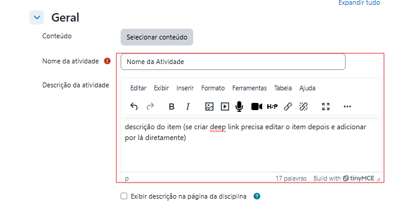
Sem restrições de acesso
Clique em "Salvar e retornar ao curso". O item aparecerá imediatamente na seção selecionada, acessível para todos os alunos matriculados.
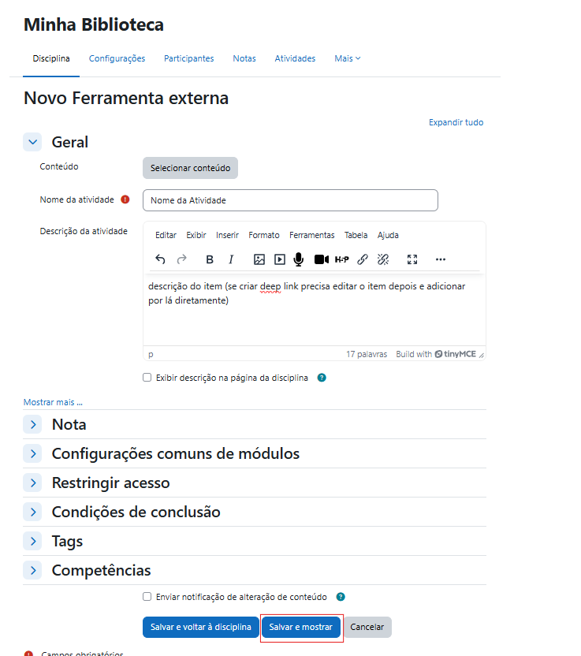
Com restrições de acesso
O Moodle permite restringir o acesso por data, grupo, nota mínima, conclusão de outra atividade, entre outros. Para configurar:
- Na mesma página de configuração, role até a seção "Restrições de acesso" e expanda-a
- Clique em "Adicionar restrição" e configure conforme necessário
- Clique em "Salvar e retornar ao curso"
Ao clicar no item, o aluno é redirecionado para a home da Minha Biblioteca, onde pode buscar qualquer livro disponível no acervo contratado — com autenticação automática.
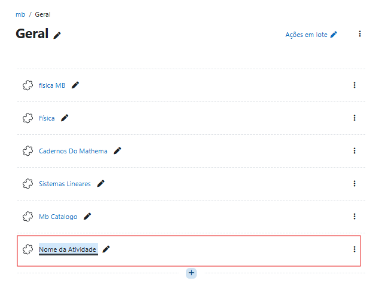
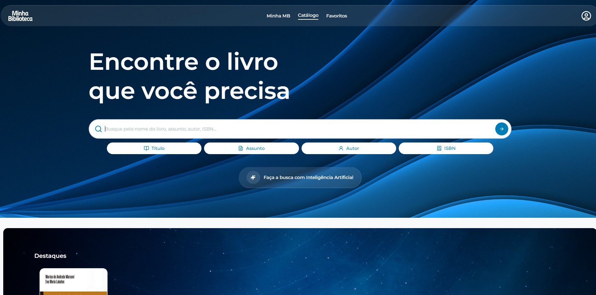
Conteúdo específico via Deep Link — configuração
Na página de configuração da atividade, você vai selecionar o conteúdo desejado através da interface da Minha Biblioteca.
- Na página de configuração, localize a seção "Conteúdo"
- Clique em "Selecionar conteúdo"
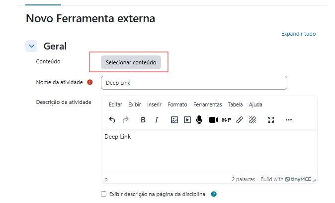
- A interface de seleção da Minha Biblioteca abre dentro do Moodle — busque por título, autor ou assunto
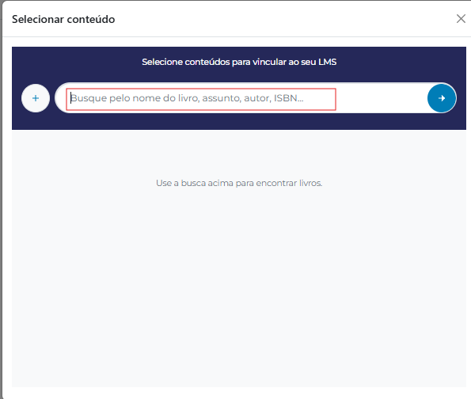
- Para cada resultado, escolha "Selecionar livro" (abre do início) ou "Selecionar página" (para apontar a um capítulo específico)
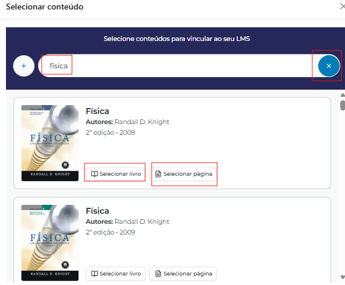
- Confirme a seleção na interface da MB
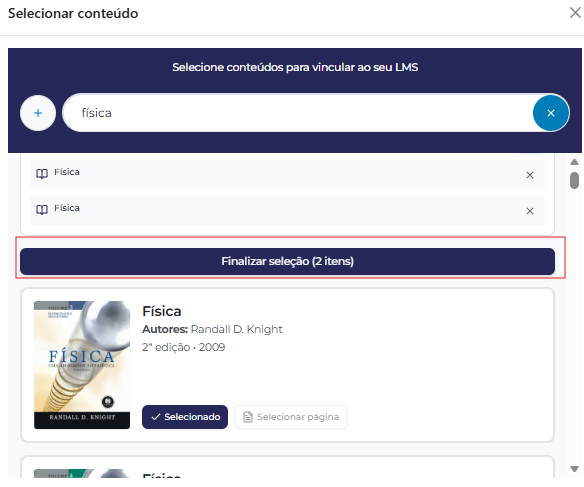
- O Moodle retorna à página de configuração com o conteúdo vinculado — edite o Nome da atividade se quiser algo mais descritivo (ex: "Leitura — Cap. 3: Fundamentos")
- Clique em "Salvar e retornar ao curso"
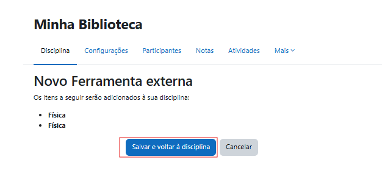
Ao clicar no item, o aluno é redirecionado diretamente para o livro ou página exata que você selecionou — com autenticação automática, sem precisar buscar nada.
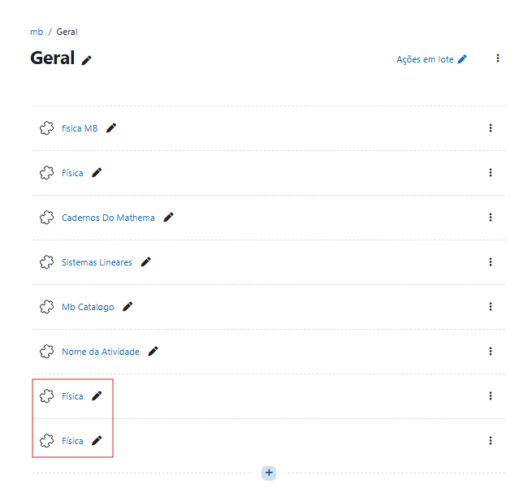
Resumo: o que o aluno vê em cada opção
| Como o professor configurou | O que o aluno vê ao clicar |
|---|---|
| Opção A — Catálogo (sem conteúdo selecionado) | Home da Minha Biblioteca — busca livre no acervo |
| Opção B — Livro selecionado via Deep Link | O livro escolhido, aberto desde o início |
| Opção B — Página específica via Deep Link | Aquela página exata do livro, pronta para leitura |
Dúvidas frequentes
Situações comuns e como resolver
O botão "Selecionar conteúdo" não aparece na configuração
O Deep Link pode não estar habilitado na configuração da ferramenta pelo administrador. Entre em contato com o suporte da sua instituição para verificar se o Deep Linking está ativo na instalação da Minha Biblioteca.
O aluno clicou e deu erro de acesso
Verifique se o aluno está cadastrado no Moodle com e-mail completo e válido e com nome e sobrenome preenchidos. Dados incompletos causam falha de autenticação na MB.
Posso adicionar múltiplos itens de uma vez?
No fluxo de Deep Link (Opção B), você pode selecionar múltiplos livros ou páginas dentro da mesma sessão de seleção — cada um se tornará uma atividade separada na seção do curso.
O aluno não tem acesso ao livro indicado
O acesso ao conteúdo depende do contrato da instituição com a Minha Biblioteca. Se o aluno abre a MB mas não vê o livro, entre em contato com o suporte da MB para verificar o acervo contratado.
Posso restringir o acesso por data ou grupo?
Sim. Tanto na Opção A quanto na Opção B, você pode configurar restrições de acesso padrão do Moodle (data, grupo, nota mínima, etc.) na seção "Restrições de acesso" da página de configuração da atividade.
Precisa de ajuda?
Para dúvidas técnicas sobre a integração, entre em contato com o suporte da sua instituição ou da Minha Biblioteca.
Para dúvidas sobre o acervo, acesse o suporte em minhabiblioteca.com.br.